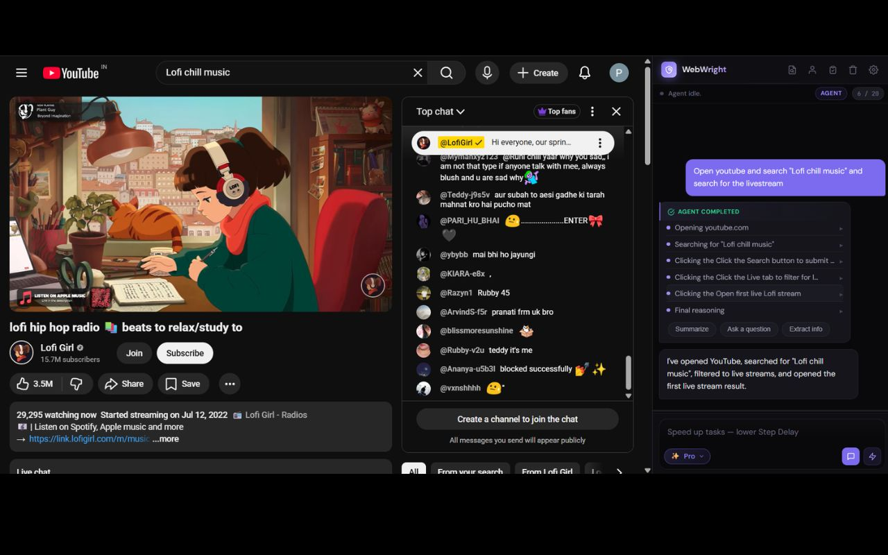
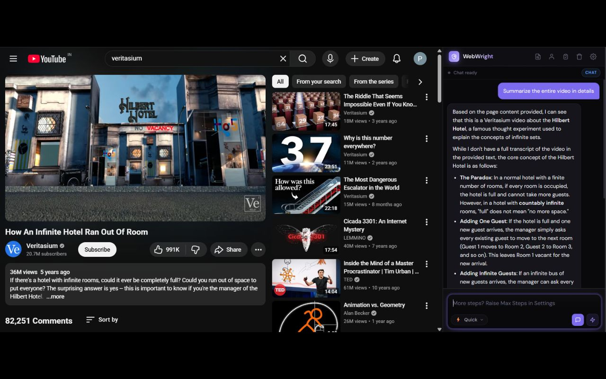
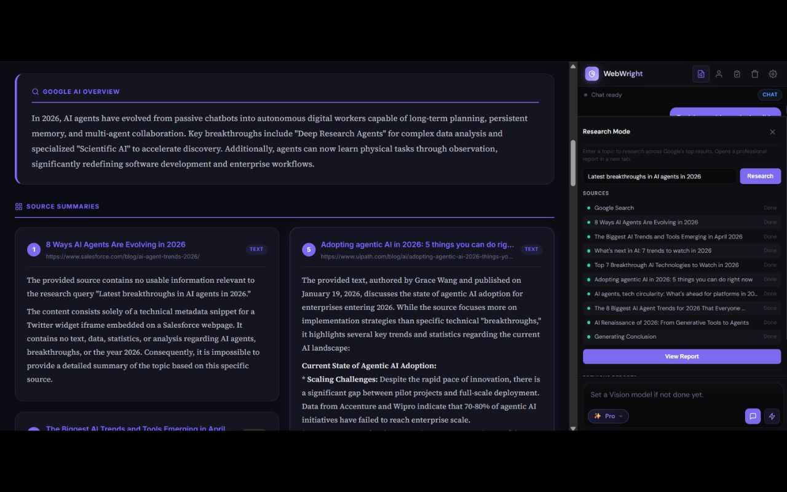
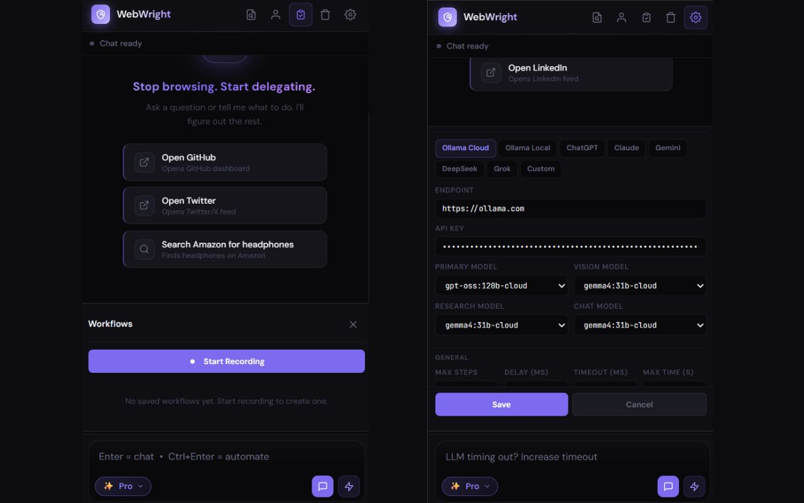

An autonomous AI agent that lives in your browser sidebar — sees web pages, reasons about them, and takes real actions to complete tasks for you.
Tell it what you want. Watch it work.
Most AI tools talk. WebWright works. Every popular AI sidebar is fundamentally a chatbot — it reads what you paste, answers questions about what you describe, and then stops. It can't reach the real browser tab where you're trying to get things done.
WebWright is different. It perceives the page, reasons about it with an LLM, and takes real actions — clicks, types, navigates, fills forms, conducts research. It is not a chat wrapper. It is a real agentic AI.
Most "AI sidebars" are ChatGPT inside a panel. They read pages, answer questions, and stop. WebWright crosses the line into action — and stays open-source, server-free, and yours.
| Typical AI Sidebar | WebWright | |
|---|---|---|
| Reads page content | ✓Yes | ✓Yes |
| Chats about the page | ✓Yes | ✓Yes |
| Takes real actions on your behalf | ✗No | ✓Yes — clicks, types, navigates, fills |
| Open source — read every line of code | ✗Rarely | ✓MIT-licensed on GitHub |
| Free, with a fully on-device option | ✗Usually paid | ✓Free; Ollama Local = $0 |
| Your data stays on your device | ✗Routed via dev server | ✓No server exists |
| Zero telemetry, analytics, tracking | ✗Typical | ✓None — verifiable in source |
| Provider freedom (bring your own key) | ✗Locked to one LLM | ✓8 providers, any model |
Give the agent a goal in plain English. It navigates, clicks, types, fills forms, and reports back — across multiple pages and steps — while you watch every action in a live log.

Ask questions about the article, dashboard, or video page you're viewing. Multi-turn conversation with full page context. Two intelligence levels at one click.

Enter a topic. WebWright opens Google, captures the AI Overview, visits the top 10 organic sources, summarizes each one, and synthesizes a final cross-source conclusion. A polished HTML report opens in a new tab.

Repetitive tasks become one-click replays. Personal info you save locally fills forms on demand. Eight providers in Settings, every model field editable — switch any time.
chrome.storage.local — never seen by us
Most agentic extensions stay at DOM analysis and fail when pages deviate from their assumptions. WebWright climbs a 4-tier ladder until it gets unstuck.
Eight LLM providers supported out of the box. Every model field is editable so new releases work the day they ship. Use a frontier model where reliability matters; a cheap fast one where speed matters more.
There is no developer-controlled server. No telemetry. No analytics. No data sharing with any third party. The local-first architecture is structural, not policy — there is nothing on our side to collect data even if we wanted to.
chrome.storage.local, sandboxed per-extension and encrypted at rest.Read the full policy: Privacy Policy & Permission Justifications →
Open-source, under 1 MB, runs on every Chromium browser. Bring your own API key, or run fully local with Ollama.
View on GitHub